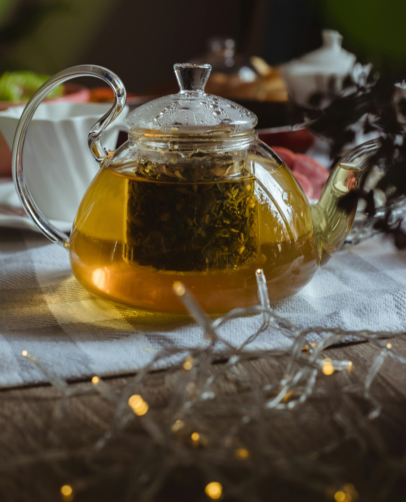

O chá é uma das bebidas mais consumidas no mundo e faz parte de tradições milenares. Seja para relaxar, apreciar novos sabores ou simplesmente criar uma pausa no dia, o chá conecta culturas, histórias e momentos de bem-estar. Neste site, você encontra conteúdos completos sobre chás naturais, seus tipos, origens, formas de preparo e curiosidades que ajudam você a entender melhor essa bebida tão especial.